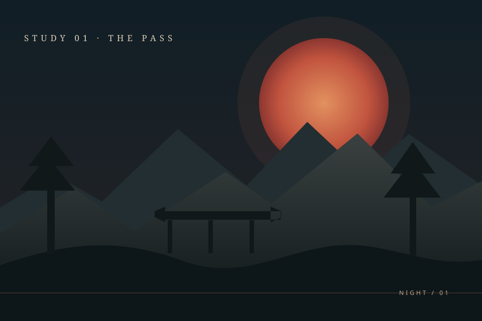
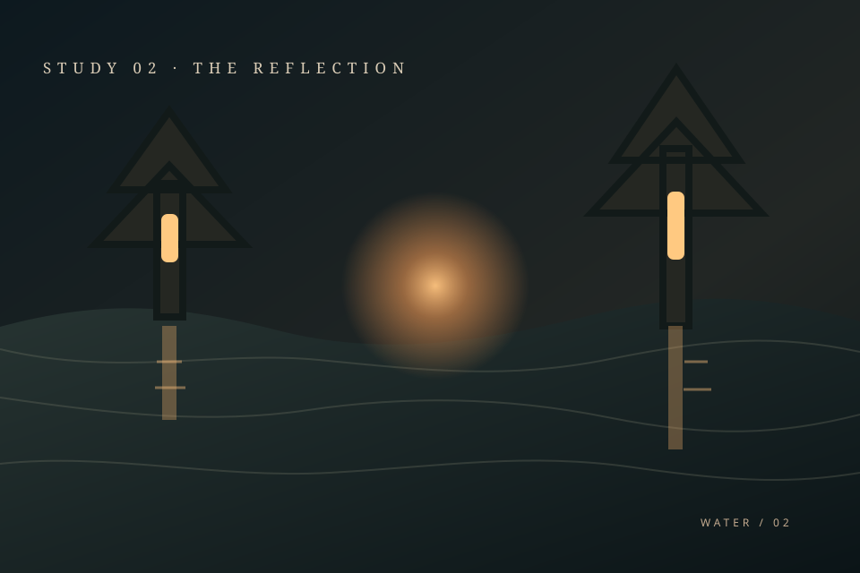
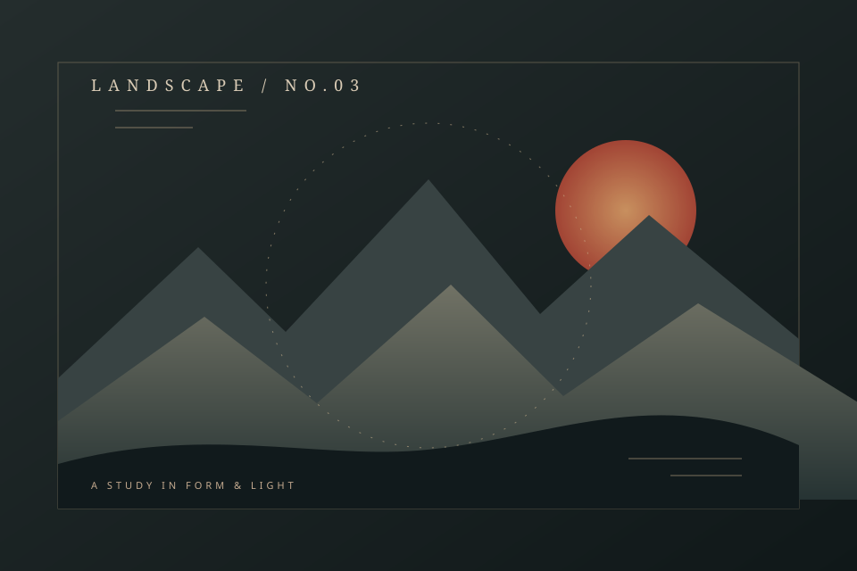

01 / 03PROJECT NAME ONE
Replace with a clear one-sentence description and the verified result.
[TOOLS / TECHNOLOGIES]REPLACE REPO URL
A PERSONAL PORTFOLIO — INSPIRED BY KYOTO
Cyber Security Engineer
Replace with a short signature statement that sounds like you.
ENTER THE WORLDA LITTLE CONTEXT ／ THE PERSON BEHIND THE WORK
Replace this paragraph with a short biography: where you began, what keeps you curious, and how you approach your work.
[PERSONALITY / VALUES / INTERESTS]
Use this space for the turns in your journey, the people or places that shaped you, and what you care about making.
SELECTED PROJECTS ／ ADD YEARS
A small selection of projects.
Replace every field with verified details.

01 / 03Replace with a clear one-sentence description and the verified result.

02 / 03Replace with the problem, your contribution, and a real outcome.

03 / 03Replace with a concise project story and a factual impact statement.
HOW IT COMES TOGETHER ／ SKILLS & EXPERIENCE
Curiosity at the beginning.
Care in every detail.
Replace with a concise description of responsibilities and contributions.
Replace with a verified qualification, award, or milestone.
THE NEXT CHAPTER ／ SAY HELLO
Have a thoughtful project in mind?
Replace this line with your own invitation.